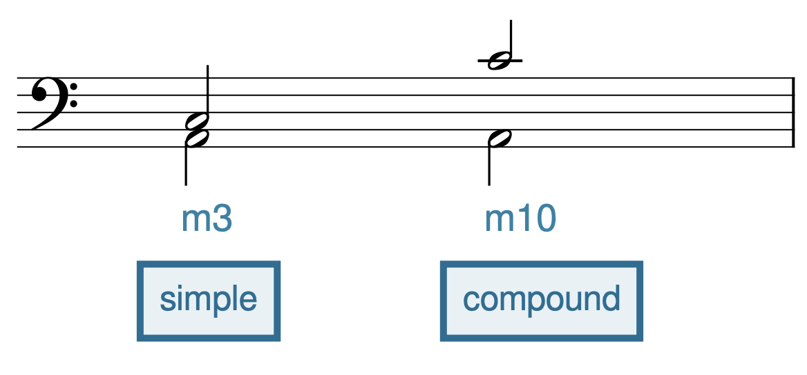
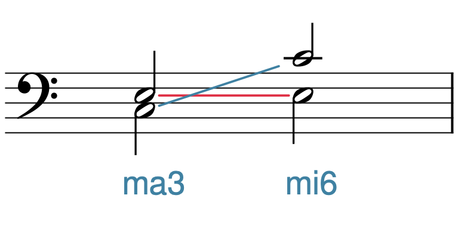

Open Music Theory：繁體中文版
音程
重點整理
- 兩個音高形成音程，通常定義為兩音之間的距離。
- 旋律音程的兩音先後演奏或演唱；和聲音程的兩音則同時發聲。
- 每個音程都有度數與性質。音程的度數是兩音在五線譜上的距離，也就是計算兩音占用及相隔的線、間位置數。
- 音程度數是不區分性質的一般分類；不論兩音加上什麼變音記號，度數都不變。
- 性質與度數結合，才能確定具體音程。同度、四度、五度與八度屬於完全音程類；二度、三度、六度與七度則分大、小。
- 任何音程都可以增大或減小。增音程比完全音程或大音程多半音；減音程比完全音程或小音程少半音。
- 同度至八度之內的音程稱為單音程；超過八度的音程稱為複音程。
- 將兩音的上下位置「翻轉」，便形成音程轉位。若低音對應的大調難以判讀，或屬於假想調，轉位可以幫助辨認音程。
- 協和音程被認為較穩定，彷彿不需要解決；不協和音程則較不穩定，彷彿需要解決。
兩個音高形成音程，通常定義為兩音之間的距離。不過，音程測量的究竟是什麼？譜面上的實際距離？兩音波長的差異？還是別的東西？樂理學者對「音程」的定義曾有相互矛盾的見解，定義也隨時代與文化環境而大幅改變。本章著重於兩種距離：兩音在五線譜上的記寫距離，以及實際發聲時的聽覺「距離」或空間。請始終記住，音程同時涉及記譜與聽覺，才能從音樂本身理解它，而不只是把它當作紙上讀寫的抽象概念。
查看英文原文
Key Takeaways
- Two pitches form an interval, which is usually defined as the distance between two notes.
- Melodic intervals are played or sung separately, while harmonic intervals are played or sung together.
- Every interval has a size and a quality. An interval's size is the distance between two notes on a staff—i.e., it is a measurement of the number of lines and spaces between two notes.
- Interval size is considered generic. In other words, it doesn't matter what accidentals you apply to the notes, the size is always the same.
- A quality makes an interval specific when used in combination with a size. Unisons, fourths, fifths, and octaves form perfect intervals, while seconds, thirds, sixths, and sevenths form major and minor intervals.
- Any interval can be augmented or diminished. Augmented intervals are one half step larger than a perfect or major interval. Diminished intervals are one half step smaller than a perfect or minor interval.
- Intervals between a unison and an octave are called simple intervals. Any interval larger than an octave is a compound interval.
- Intervallic inversion occurs when two notes are "flipped." When you need to identify an interval where the lower note is the tonic of a difficult or imaginary major key, inverting the interval can help.
- Consonant intervals are intervals that are considered more stable, as if they do not need to resolve, while dissonant intervals are considered less stable, as if they do need to resolve.
Two pitches form an interval, which is usually defined as the distance between two notes. But what does an interval measure? Physical distance on the staff? Difference in wavelength between pitches? Something else? Music theorists have had contradictory ideas on the definition of "interval," and these definitions have varied greatly with milieu. This chapter will focus on intervals as a measure of two things: written distance between two notes on a staff, and an aural "distance" (or space) between two sounding pitches. It will be important to keep in mind at all times that intervals are both written and aural, so that you are thinking of them musically (and not simply as an abstract concept that you are writing and reading).
音程可分為旋律音程（兩音先後演奏或演唱）與和聲音程（兩音同時演奏或演唱）。譜例 1第一小節的兩音同時發聲，形成和聲音程；第二小節的兩音先後發聲，形成旋律音程。
譜例 1。和聲音程與旋律音程。
每個音程都有度數與性質。度數是兩音在五線譜上的距離，也就是計算兩音占用及相隔的線、間位置數。記寫時用阿拉伯數字（2、3、4 等）；英語讀法則用序數 second、third、fourth、fifth、sixth、seventh 等，中文稱二度、三度、四度、五度、六度、七度。計算時，起音一定從「1」算起。譜例 2顯示 C 大音階內的八種度數。英語名稱大多採用序數，但有兩個例外：位於同一線或間的兩音稱為 unison（同度），不用 first；連起點在內相隔八個線、間位置的兩音稱為 octave（八度），不用 eighth。
譜例 2。音程度數。
度數是不區分性質的一般分類。也就是說，不論音符加上什麼變音記號，度數都不變。譜例 3示範了這點：雖然變音記號不同，各音程仍都是三度，因為從低音到高音，連兩端在內都占三個線、間位置。
譜例 3。變音記號不影響音程的一般度數。
以下練習可幫助你辨識音程度數：
查看英文原文
Size
Intervals can be melodic (played or sung separately) or harmonic (played or sung together). In Example 1, the notes in the first measure sound together (harmonically), while in the second measure, they sound separately (melodically).
Example 1. A harmonic and a melodic interval.
Every interval has a size and a quality. A size is the distance between two notes on a staff—i.e., it is a measurement of the number of lines and spaces between two notes. Sizes are written with Arabic numbers (2, 3, 4, etc.); however, they are spoken with ordinal numbers (second, third, fourth, fifth, sixth, seventh, etc.). Always begin with "one" when counting size. Example 2 shows the eight sizes within a C major scale. As you can see, the sizes are labeled with ordinal numbers, with two exceptions: the interval between two notes on the same line or space is called a “unison,” not a “first,” and notes eight lines and spaces apart are said to be an “octave,” not an “eighth.”
Example 2. Sizes of intervals.
Size is considered generic. In other words, it doesn't matter what accidentals you apply to the notes—the size is always the same. Example 3 demonstrates this: despite the different accidentals, each of these intervals is a third (or “generic third”) because there are three lines/spaces between the two notes.
Example 3. Accidentals do not affect an interval's generic size.
You can practice identifying interval size with the following exercise:
性質與度數結合，才能確定具體音程。性質更精確地區分兩音的記寫距離，並與度數共同描述音程的聽覺效果。
音程有五種性質：
- 增（以 A 或 + 表示）
- 大（ma）
- 完全（P）
- 小（mi）
- 減（d 或 o）
念出或寫出音程時，性質放在度數前方。例如「完全四度」（P4）、「小三度」（mi3）或「增二度」（A2 或 +2）。
目前先討論三種性質：完全、大與小。不同時期與地區的理論家，曾依時代與文化環境，將這些性質套用於不同度數。譜例 4顯示今日的分類：左欄的二度、三度、六度與七度可分為大、小；右欄的同度、四度、五度與八度則屬完全音程類。
| 大／小 | 完全 |
|---|---|
| 二度 | 同度 |
| 三度 | 四度 |
| 六度 | 五度 |
| 七度 | 八度 |
譜例 4。音程性質的分類。
查看英文原文
Perfect, Major, and Minor Qualities
A quality makes an interval specific when used in combination with a size. Quality more precisely measures written distance between notes, and—in combination with an interval's size—it describes the aural sound of an interval.
There are five possible interval qualities:
- Augmented (designated as A or +)
- Major (ma)
- Perfect (P)
- Minor (mi)
- Diminished (d or o)
The quality comes before the size when saying or writing an interval. For example, an interval could be described as a "perfect fourth" (abbreviated P4), a "minor third" (abbreviated mi3), or an "augmented second" (abbreviated A2 or +2).
For now, we will only discuss three qualities: perfect, major, and minor. Different theorists (in different locations and time periods) have applied these qualities to different sizes of intervals, depending on milieu. Example 4 shows how these qualities are applied today. The left column shows that seconds, thirds, sixths, and sevenths are major and/or minor, while the right column shows that unisons, fourths, fifths, and octaves are perfect intervals.
| Major/Minor | Perfect |
|---|---|
| 2nds | Unisons |
| 3rds | 4ths |
| 6ths | 5ths |
| 7ths | Octaves |
Example 4. Interval qualities.
學習記寫與辨識音程性質有幾種方法。你可能聽過計算半音數的方法；本書不建議使用，因為這樣既耗時，也常算錯。我們建議運用你對大音階的認識來辨識音程性質。
用這個方法辨識音程度數與性質時，依下列步驟進行：
- 先計算兩音之間的線、間位置，確定度數。
- 把音程的低音想成某個大音階的主音。
- 判斷高音是否屬於第二步想像的大音階，並據此決定性質。
- 如果屬於該大音階：同度、四度、五度與八度是完全音程；二度、三度、六度與七度是大音程。如果不屬於該大音階，可能是小音程（降低的二度、三度、六度或七度），也可能是下一節要介紹的增、減音程。
列出兩個音程。試著辨識它們的度數與性質：
譜例 5。兩個音程。
譜例 5a以高音譜號寫出 F 與 C。用「大音階法」辨識這個音程的步驟如下：
- 首先，度數是五度：F 本身算 1，G 是 2，A 是 3，B 是 4，C 是 5。
- 其次，C 屬於 F 大調；F 大調只有一個降記號 B♭。
- 因此，這個音程是完全五度。
接著用同樣的方法處理譜例 5b。這個譜例以高音譜號寫出 E♭ 與 C♭。依相同步驟判斷：
- 首先，度數是六度：E♭ 本身算 1，F 是 2，G 是 3，A 是 4，B 是 5，C 是 6。
- 其次，C♭ 不屬於 E♭ 大調；E♭ 大調有 B♭、E♭、A♭ 三個降記號。
- 因此，這個音程是小六度。若是大六度，高音就必須是 C♮ 而非 C♭，因為 C♮ 才屬於 E♭ 大調。
以下練習可幫助你辨識完全、大與小音程：
查看英文原文
The "Major Scale" Method for Determining Quality
There are several different methods for learning to write and identify qualities of intervals. One method you may have heard of is counting half steps. We do not recommend this method, because it is time consuming and often inaccurate. Instead, we recommend using what you know about major scales to identify interval quality.
To identify an interval (size and quality) using this method, complete the following steps:
- Determine size (by counting lines and spaces between the notes).
- Imagine that the bottom note of the interval is the tonic of a major scale.
- Determine whether or not the top note is in the bottom note's major scale (imagined in step 2) and assign the corresponding quality.
- If it is: the interval is perfect (if it is a unison, fourth, fifth, or octave) or major (if it is a second, third, sixth, or seventh). If it is not: the interval could be minor (a lowered second, third, sixth, or seventh), or it could be augmented or diminished, which will be covered in the next section.
shows two intervals. Try identifying their size and quality:
Example 5. Two intervals.
In Example 5a, the notes are F and C in treble clef. Here is how you would use the “Major Scale” method to identify the interval:
- First, this interval is a generic fifth (F to itself is 1; to G is 2; to A is 3; to B is 4; to C is 5).
- Second, C is within the key of F major (which has one flat, B♭).
- Therefore, the interval is a perfect fifth.
Let's now use this process for Example 5b. The notes in this example are E♭ and C♭ in treble clef. Let’s go through the same process again:
- First, this interval is a generic sixth (E♭ to itself is 1; to F is 2; to G is 3; to A is 4; to B is 5; to C is 6).
- Second, C♭ is not in the key of E♭ major (which has three flats: B♭, E♭, and A♭).
- Therefore, this is a minor sixth. If it were a major sixth, then the C would have to be C♮ instead of C♭, because C♮ is in the key of E♭ major.
You can practice identifying perfect, major, and minor intervals with the following exercise:
先複習一下：音程共有五種性質，目前已介紹大、小與完全音程：
- 增（以 A 或 + 表示）
- 大（ma）
- 完全（P）
- 小（mi）
- 減（d 或 o）
增音程比完全音程或大音程多半音。譜例 6a第一小節先列出 F 與 C，形成完全五度，因為 C 屬於 F 大調。接著將高音升半音至 C♯，音程便增加半音。因此，F 到 C♯ 是增五度，縮寫為 A5 或 +5。譜例 6a第二小節先列出 G 與 E 的大六度，因為 E 屬於 G 大調；接著將高音升半音至 E♯，便成為增六度（A6 或 +6）。
譜例 6。增音程可由（a）升高上方音，或（b）降低下方音形成。
減音程比完全音程或小音程少半音。譜例 7a第一小節將完全五度 F–C 的高音降至 C♭，縮小半音，形成減五度，又稱三全音，通常縮寫為 d5 或 o5。第二小節中，G–E 原本是大六度；將高音降半音，就成為小六度，再將高音降至 E𝄫，才成為減六度。請注意：縮小半音會讓完全音程與小音程變成減音程，但會讓大音程變成小音程。
同樣地，不一定要改變高音。譜例 7b將完全五度 F–C 的低音升半音至 F♯，便成為減五度。第二小節將大六度 G–E 的 G 升半音至 G♯，先變成小六度；第三小節再將 G♯ 升至 G𝄪，音程又縮小半音，才成為減六度。
譜例 7。減音程可由（a）降低上方音，或（b）升高下方音形成。
再次示範並整理音程的相對距離。圖中每個括線表示的音程，都與左右相鄰者相差半音。譜例 8a藉由上方音的變音記號改變性質：比完全音程或大音程多半音的是增音程；比大音程少半音的是小音程；比完全音程或小音程少半音的是減音程。譜例 8b整理的性質與譜例 10a相同，只是改變下方音的變音記號，而非上方音。
譜例 8。改變（a）上方音與（b）下方音時，音程的相對距離。
如果難以從譜上的變音記號想像音程性質，可以運用身體動作的感覺來理解。例如，處理譜例 8a時，將雙手一上一下平行放置，再上下移動上方的手，表示音程性質的變化。譜例 8b也可以用同樣方法，但改成上下移動下方的手。請記住，即使雙手逐漸靠近或遠離，音程度數仍然不變；手勢表示的是新增、更改或移除變音記號所造成的性質變化。
以下練習可幫助你辨識增、減音程：
查看英文原文
Augmented and Diminished Qualities
To review, there are five possible interval qualities, of which we have covered major, minor, and perfect:
- Augmented (designated as A or +)
- Major (ma)
- Perfect (P)
- Minor (mi)
- Diminished (d or o)
Augmented intervals are one half step larger than a perfect or major interval. The first measure of Example 6a first shows the notes F and C, which form a perfect fifth (because C is in the key of F major). The top note of this interval is then raised by a half step to a C♯, making the interval one half step larger. The interval from F to C♯ is therefore an augmented fifth (abbreviated as either A5 or +5). In the second measure of Example 6a, the first interval is a major sixth between G and E (because E is in the key of G major). The top note is then raised by a half step to E♯, making the interval into an augmented sixth (A6 or +6).
The bottom note of an interval can be altered as well. In the first measure of Example 6b, the perfect fifth F–C is turned into an augmented fifth by lowering the F by a half step to F♭, which makes the interval one half step larger than a perfect fifth. In the second measure of Example 6b, the major sixth G–E is turned into an augmented sixth by lowering the G by a half step to G♭.
Example 6. Augmented intervals created by (a) raising the top note and (b) lowering the bottom note.
Diminished intervals are one half step smaller than a perfect or minor interval. In the first measure of Example 7a, the perfect fifth F–C is made a half step smaller by lowering the top note to C♭, forming a diminished fifth (also called a tritone, usually abbreviated as d5 or o5). In the second measure, G–E form a major sixth, which becomes a minor sixth when the top note is lowered by a half step. The minor sixth then becomes a diminished sixth when the top note is lowered again to E𝄫. Note that contracting an interval by one half step turns perfect and minor intervals into diminished intervals, but it turns major intervals into minor intervals.
Again, it is not always the top note that is altered. In Example 7b, the perfect fifth F–C becomes diminished when the bottom note moves up a half step to F♯. In the second measure, the major sixth G–E first becomes a minor sixth when the G moves up a half step to G♯. This minor interval then becomes diminished when the G♯ moves to G𝄪 in the third measure, further contracting the interval by another half step.
Example 7. Diminished intervals created by (a) lowering the top note and (b) raising the bottom note.
again demonstrates and summarizes the relative size of intervals. Each bracket in this example is one half step larger or smaller than the brackets to its right and left. In Example 8a, the interval quality is changed by altering the top note with accidentals. As you can see, intervals one half step larger than perfect or major intervals are augmented; intervals one half step smaller than major intervals are minor; and intervals one half step smaller than perfect or minor intervals are diminished. Example 8b outlines the same qualities as 10a, only with the bottom note altered by accidentals instead of the top note.
Example 8. Relative size of intervals with (a) the top note altered and (b) the bottom note altered.
If you find yourself having trouble visualizing the qualities of intervals with accidentals on the staff, it may help to think of the interval kinesthetically. For example, in Example 8a you can put one of your hands over the other (parallel to one another) and move your top hand up or down to reflect the change in quality. You can do the same thing in Example 8b, except you would move your bottom hand up and down. Remember that even though your hands may be moving closer together and further apart, the generic size of the interval remains the same; your hands are representing the changes of quality that occur when accidentals are added, changed, or removed.
You can practice identifying augmented and diminished intervals with the following exercise:
音程還能在增、減之外繼續擴大或縮小。比增音程再多半音的是倍增音程，比倍增音程再多半音的是三重增音程。相同地，比減音程再少半音的是倍減音程，比倍減音程再少半音的是三重減音程。
查看英文原文
Doubly and Triply Augmented and Diminished Intervals
Intervals can be further contracted or expanded outside of the augmented and diminished qualities. An interval a half step larger than an augmented interval is a doubly augmented interval, while an interval a half step larger than a doubly augmented interval is a triply augmented interval. Likewise, an interval a half step smaller than a diminished interval is a doubly diminished interval, while an interval a half step smaller than a doubly diminished interval is a triply diminished interval.
前面討論的同度至八度，都是單音程，度數不超過八度。超過八度的音程則稱為複音程。譜例 9中，A 與 C 先形成小三度，屬於單音程；第二組音將 C 升高八度，就成為小十度，屬於複音程。單音程與其對應的複音程，性質相同。
{kind=link}

- simple：單音程；
- compound：複音程。
- m3：小三度；
- m10：小十度（本圖用m作為minor的縮寫）。
若要將單音程擴大一個八度，就把度數加上 7。因此：
- 同度（以 1 表示）變成八度（8）。
- 二度變成九度。
- 三度變成十度。
- 四度變成十一度。
- 五度變成十二度。
- 六度變成十三度。
這些是音樂學習中最常遇到的八度擴展關係。請記住，八度、十一度與十二度和對應的單音程一樣，屬於完全音程類；九度、十度與十三度則分大、小。
查看英文原文
Compound Intervals
The intervals discussed above, from unison to octave, are simple intervals, which have a size of an octave or smaller. Any interval larger than an octave is a compound interval. In Example 9, the notes A and C first form a minor third (a simple interval). When the C is brought up an octave in the second pair of notes, the interval becomes a minor tenth (a compound interval). Quality remains the same for simple intervals and their corresponding compound intervals.
If you want to make a simple interval a compound interval, add 7 to its size. Consequently:
- Unisons (which get the number 1) become octaves (8s)
- 2nds become 9ths
- 3rds become 10ths
- 4ths become 11ths
- 5ths become 12ths
- 6ths become 13ths
These are the most common compound intervals that you will encounter in your music studies. Remember that octaves, 11ths, and 12ths are perfect like their simple counterparts, while 9ths, 10ths, and 13ths are major/minor.
將兩音的上下位置「翻轉」，便形成音程轉位。例如，譜例 10原本下方是 C、上方是 E；將 C 升高八度，就得到轉位。為什麼這很重要？有兩個原因：第一，互為轉位的音程有許多有趣的性質，作曲家有時會利用這些性質；第二，當你不想從原來的低音計算時，轉位能幫助辨識或記寫音程。
{kind=link}

- ma3：大三度；
- mi6：小六度。
先看第一點：這些有趣的性質。首先，互為轉位的音程度數相加一定等於 9：
- 同度（1）轉為八度（8），1 + 8 = 9；八度也轉為同度。
- 二度轉為七度，2 + 7 = 9；七度也轉為二度。
- 三度轉為六度，3 + 6 = 9；六度也轉為三度。
- 四度轉為五度，4 + 5 = 9；五度也轉為四度。
轉位後的音程性質也有一致規律：
- 完全音程轉位後仍是完全音程。
- 大音程轉為小音程，小音程轉為大音程。
- 增音程轉為減音程，減音程轉為增音程。
知道這些規律，就算不看五線譜，也能算出音程轉位。例如，大七度轉為小二度，增六度轉為減三度，完全四度轉為完全五度。
{kind=link}
再看第二點：有時你會遇到不想從低音計算或辨識的音程。例如譜例 11的 E𝄫–A♭，原文認為不適合直接用「大音階法」，因為低音 E𝄫 沒有一般使用的調號，而是「假想」調號。遇到這種音程，可以先轉位，改從具有一般調號的 A♭ 大調來計算。A♭ 大調有 B♭、E♭、A♭、D♭ 四個降記號；A♭ 到上方的 E♭ 原本是完全五度，但此例把 E♭ 降為 E𝄫，使音程縮小半音，因此是減五度（d5）。
既然知道原音程的轉位是減五度，就能反推原音程。減五度轉位後是增四度，因為減音程轉為增音程，而且 5 + 4 = 9。因此，原音程是增四度（A4）。
查看英文原文
Intervallic Inversion
Intervallic inversion occurs when two notes are "flipped." In Example 10, for instance, an interval with C on the bottom and E on the top is inverted by moving the C up by an octave. You might be wondering: why is this important? There are two reasons: first, because inverted pairs of notes share many interesting properties (which are sometimes exploited by composers), and second, because inverting a pair of notes can help you to identify or write an interval when you do not want to work from the given bottom note.
Let's start with the first point: the interesting properties. First, the size of inverted pairs always adds up to 9:
- Unisons (1s) invert to octaves (8s) (1 + 8 = 9) and octaves invert to unisons.
- Seconds invert to sevenths (2 + 7 = 9) and sevenths invert to seconds.
- Thirds invert to sixths (3 + 6 = 9) and sixths invert to thirds.
- Fourths invert to fifths (4 + 5 = 9) and fifths invert to fourths.
Qualities of inverted pairs of notes are also very consistent:
- Perfect intervals invert to perfect intervals.
- Major intervals invert to minor intervals (and minor intervals to major intervals).
- Augmented intervals invert to diminished intervals (and diminished intervals to augmented intervals).
With that information, you can now calculate the inversions of intervals without even looking at staff paper. For example: a major seventh inverts to a minor second, an augmented sixth inverts to a diminished third, and a perfect fourth inverts to a perfect fifth.
Now for the second point: sometimes you will come across an interval that you do not want to calculate or identify from the bottom note. In the interval E𝄫–A♭ written in Example 11, for instance, identifying the interval using the “Major Scale” method would not work—the bottom note is E𝄫, and there is no key signature for this note (its key signature is “imaginary”). So, if you were given this interval to identify, you might consider inverting the interval. Now the inversion of the interval can be calculated from the non-imaginary key of A♭ major. The key of A♭ major has four flats (B♭, E♭, A♭, and D♭). An E♭ above A♭ would therefore be a perfect fifth; however, this interval has been contracted (made a half step smaller) because the E♭ has been lowered to E𝄫. That means this interval is a d5 (diminished fifth).
Now that we know the inversion of the first interval is a d5, we can calculate the original interval. A diminished fifth inverts to an augmented fourth (because diminished intervals invert to augmented intervals and because five plus four equals nine). Thus, the first interval is an augmented fourth (A4).
協和與不協和
| 旋律上協和 | 旋律上不協和 |
|---|---|
| 完全音程 | 增音程 |
| 大二度、小二度 | 減音程 |
| 大三度、小三度 | 大七度、小七度 |
| 大六度、小六度 |
譜例 12。旋律上的協和與不協和音程。
列出和聲上的協和與不協和音程：
| 和聲上協和 | 和聲上不協和 |
|---|---|
| 大三度、小三度 | 大二度、小二度 |
| 大六度、小六度 | 增音程 |
| 完全同度、完全八度、完全五度 | 減音程 |
| 大七度、小七度 | |
| 完全四度 |
譜例 13。和聲上的協和與不協和音程。
協和與不協和音程的意義，會在〈類種對位法入門〉中進一步討論。
查看英文原文
Consonance and Dissonance
Intervals are categorized as consonant or dissonant. Consonant intervals are intervals that are considered more stable, as if they do not need to resolve, while dissonant intervals are considered less stable, as if they do need to resolve. These categorizations have varied with milieu. Example 12 shows a table of melodically consonant and dissonant intervals:
| Melodically Consonant | Melodically Dissonant |
|---|---|
| Perfect Intervals | Augmented Intervals |
| ma2, mi2 | Diminished Intervals |
| ma3, mi3 | ma7, mi7 |
| ma6, mi6 |
Example 12. Melodically consonant and dissonant intervals.
shows harmonically consonant and dissonant intervals:
| Harmonically Consonant | Harmonically Dissonant |
|---|---|
| ma3, mi3 | ma2, mi2 |
| ma6, mi6 | Augmented Intervals |
| P1, P8, P5 | Diminished Intervals |
| ma7, mi7 | |
| P4 |
Example 13. Harmonically consonant and dissonant intervals.
The implications of consonant and dissonant intervals are discussed further in the Introduction to Species Counterpoint.
最終，音程的聲音與譜面形狀都需要記熟。不過，有幾個訣竅能幫助加快學習，其中之一就是利用鋼琴鍵盤的「白鍵法」。
這個方法要求你記住鋼琴白鍵之間的所有音程，也就是 C 大調中的所有音程。學會之後，任何音程都能視為某個白鍵音程的變化。例如，若知道 D 到 F 是小三度，就能判定 D 到 F♯：它比原音程多半音，因此是大三度。
方便的是，白鍵音程的度數與性質有許多重複規律，譜例 14整理了這些規律。記住最常見的類型與例外即可。
- 二度都是大二度，只有 E–F 與 B–C 兩個例外。
- 三度都是小三度，只有 C–E、F–A、G–B 三個例外，這三組是大三度。
- 四度都是完全四度，只有 F–B 一個例外，它是增四度，也就是三全音。
譜例 14。白鍵的二度、三度與四度音程。
只要理解前面介紹過的音程轉位，你現在其實就知道所有白鍵音程了！例如，既然知道二度中只有 E–F 與 B–C 是小二度，其餘都是大二度，就能推知七度中只有 F–E 與 C–B 是大七度，其餘都是小七度，如譜例 15所示。
{kind=link}
white-key sevenths：白鍵七度。
- mi：小；
- ma：大。
掌握白鍵音程後，再考慮兩音所加的變音記號，就能判定其他音程。
查看英文原文
Another Method for Intervals: The White-Key Method
Ultimately, intervals need to be committed to memory, both aurally and visually. There are, however, a few tricks to learning how to do this quickly. One such trick is the so-called "white-key method," which refers to the piano keyboard.
This method requires you to memorize all of the intervals found between the white keys on the piano (or simply all of the intervals in the key of C major). Once you’ve learned these, any interval can be calculated as an alteration of a white-key interval. For example, we can figure out the interval for the notes D and F♯ if we know that the interval D to F is a minor third and this interval has been made one semitone larger: a major third.
Conveniently, there is a lot of repetition of interval size and quality among white-key intervals, summarized in Example 14. Memorize the most frequent type and the exceptions.
- All of the seconds are major except for two: E–F and B–C.
- All of the thirds are minor except for three: C–E, F–A, and G–B, which are major.
- All of the fourths are perfect except for one: F–B, which is an augmented fourth (a tritone).
Example 14. White-key seconds, thirds, and fourths.
Believe it or not, you now know all of the white-key intervals, as long as you understand the concept of intervallic inversion, which was previously explained. For example, if you know that all seconds are major except for E–F and B–C (which are minor), then you know that all sevenths are minor except for F–E and C–B (which are major), as seen in Example 15.
Once you’ve mastered the white-key intervals, you can figure out any other interval by taking into account any accidentals applied to the notes.
可幫助理解音程的等音等價。表中的直欄表示不同音程度數，橫列則依音程包含的半音數排列。同一橫列的音程互為等音。例如，大二度（ma2）與減三度（d3）都包含兩個半音，因此互為等音；增四度（A4）與減五度（d5）也互為等音，兩者都包含六個半音。
| 半音數 | 同度 | 二度 | 三度 | 四度 | 五度 | 六度 | 七度 | 八度 |
|---|---|---|---|---|---|---|---|---|
| 0 | P1 | d2 | ||||||
| 1 | A1 | mi2 | ||||||
| 2 | ma2 | d3 | ||||||
| 3 | A2 | mi3 | ||||||
| 4 | ma3 | d4 | ||||||
| 5 | A3 | P4 | ||||||
| 6 | A4 | d5 | ||||||
| 7 | P5 | d6 | ||||||
| 8 | A5 | mi6 | ||||||
| 9 | ma6 | d7 | ||||||
| 10 | A6 | mi7 | ||||||
| 11 | ma7 | d8 | ||||||
| 12 | A7 | P8 |
譜例 16。音程的等音等價。
{kind=link}
當你不想從低音計算或辨識音程時，音程的等音等價很有幫助。前面已介紹另一種處理方式：音程轉位。你可以選擇較順手的方法，兩者都能得到相同結果。譜例 17重現譜例 11的音程。低音 E𝄫 沒有一般使用的調號，因此較難辨識；但運用等音關係，將 E𝄫 視為 D，將 A♭ 視為 G♯，就比較容易處理。現在可用等音低音 D 的大調調號，判定音程為增四度（A4）。
- Lindley, Mark，Murray Campbell 與 Clive Greated 修訂。2001。〈Interval〉（音程）。Grove Music Online。https://doi.org/10.1093/gmo/9781561592630.article.21263。
- McGrain, Mark。1986。Music Notation（音樂記譜法）。波士頓：Berklee Press。
- Roemer, Clinton。1985。The Art of Music Copying: The Preparation of Music for Performance（抄譜的藝術：為演出準備樂譜），第 2 版。Sherman Oaks：Roerick Music Company。
- Thompson, William Forde。2013。〈Intervals and Scales〉（音程與音階）。The Psychology of Music（音樂心理學），Diana Deutsch 編：107–140。
- 音程 A（PDF、MSCZ）：依性質與度數記寫及辨識音程。
- 音程 B（PDF、MSCZ）：依性質與度數記寫及辨識音程。
- 音程 C（PDF、MSCZ）：依性質與度數記寫及辨識音程。
- 音程 D（PDF、MSCZ）：依性質與度數記寫及辨識音程，辨識與記寫音程轉位，並運用音程分析旋律。僅高音與低音譜號。學習單播放清單
- 音程 E（PDF、MSCZ）：依性質與度數記寫及辨識音程，辨識與記寫音程轉位，並運用音程分析旋律。僅高音與低音譜號。學習單播放清單
- 大、小與完全音程 A（PDF、MSCZ）：僅練習記寫及辨識大、小與完全音程。
- 大、小與完全音程 B（PDF、MSCZ）：僅練習記寫及辨識大、小與完全音程。
- 減、增音程 A（PDF、MSCZ）：僅練習記寫及辨識減、增音程。
- 減、增音程 B（PDF、MSCZ）：僅練習記寫及辨識減、增音程。
媒體出處與授權
- 〈單音程與複音程〉© Megan Lavengood，採用 CC BY-SA（姓名標示—相同方式分享）授權。
- 〈音程轉位〉© Megan Lavengood，採用 CC BY-SA（姓名標示—相同方式分享）授權。
- 〈假想調音程〉© Megan Lavengood，採用 CC BY-SA（姓名標示—相同方式分享）授權。
- 〈白鍵七度〉© Megan Lavengood，採用 CC BY-SA（姓名標示—相同方式分享）授權。
- 〈等音等價〉© Megan Lavengood，採用 CC BY-SA（姓名標示—相同方式分享）授權。
查看英文原文
Intervallic Enharmonic Equivalence
may be useful when thinking about enharmonic equivalence of intervals. In this chart, the columns are different intervallic sizes, while the rows present intervals based on the number of half steps they contain. Each row in this chart is enharmonically equivalent. For example, a major second (ma2) and diminished third (d3) are enharmonically equivalent (both are two half steps). Likewise, an augmented fourth (A4) and diminished fifth (d5) are enharmonically equivalent—both are six half steps in size.
| number of semitones | unis. | 2nd | 3rd | 4th | 5th | 6th | 7th | oct. |
|---|---|---|---|---|---|---|---|---|
| 0 | P1 | d2 | ||||||
| 1 | A1 | mi2 | ||||||
| 2 | ma2 | d3 | ||||||
| 3 | A2 | mi3 | ||||||
| 4 | ma3 | d4 | ||||||
| 5 | A3 | P4 | ||||||
| 6 | A4 | d5 | ||||||
| 7 | P5 | d6 | ||||||
| 8 | A5 | mi6 | ||||||
| 9 | ma6 | d7 | ||||||
| 10 | A6 | mi7 | ||||||
| 11 | ma7 | d8 | ||||||
| 12 | A7 | P8 |
Example 16. Enharmonic equivalence of intervals.
Intervallic enharmonic equivalence is useful when you come across an interval that you do not want to calculate or identify from the bottom note. We have already discussed one method for this situation previously, which was intervallic inversion. You may prefer one method or the other, though both will yield the same result. Example 17 reproduces the interval from Example 11. As you'll recall, there is no key signature for the bottom note (E𝄫), making identification of this interval difficult. By using enharmonic equivalence, however, we can identify this interval more easily, recognizing that E𝄫 is enharmonically equivalent with D and that A♭ is enharmonically equivalent with G♯. Now we can identify the interval as an A4 (augmented fourth), using the key signature of the enharmonically equivalent bottom note (D).
- Lindley, Mark, revised by Murray Campbell and Clive Greated. 2001. "Interval." Grove Music Online. https://doi.org/10.1093/gmo/9781561592630.article.21263.
- McGrain, Mark. 1986. Music Notation. Boston: Berklee Press.
- Roemer, Clinton. 1985. The Art of Music Copying: The Preparation of Music for Performance, 2nd edition. Sherman Oaks: Roerick Music Company.
- Thompson, William Forde. 2013. "Intervals and Scales." The Psychology of Music, ed. Diana Deutsch: 107–40.
- Specific Intervals (musictheory.net)
- Interval Introduction (Robert Hutchinson)
- Intervals (Hello Music Theory)
- Diminished and Augmented Intervals (Open Textbooks)
- Diminished and Augmented Intervals (Robert Hutchinson)
- Compound Intervals (Hello Music Theory)
- Interval Inversion (musictheory.net)
- Interval Ear Training (musictheory.net)
- Interval Ear Training (Tone Dear)
- Interval Ear Training (teoria)
- Interval "Songs for Identification (Miami Date College)
- Interval Identification (musictheory.net)
- Keyboard Interval Identification (musictheory.net)
- Interval Identification, pp. 1–4 (.pdf), (.pdf, .pdf, .pdf), pp. 3–6 (.pdf)
- Interval Identification and Construction, pp. 18–19 (.pdf)
- Interval Construction (.pdf), p. 14, 19–21 (.pdf)
- Compound Intervals, pp. 15–17 (.pdf)
- Writing a Mix of Compound and Simple Intervals, pp. 1–2 (.pdf)
- Inverting Intervals (.pdf)
- Intervals A (.pdf, .mscz). Asks students to write and identify intervals by quality and size.
- Intervals B (.pdf, .mscz). Asks students to write and identify intervals by quality and size.
- Intervals C (.pdf, .mscz). Asks students to write and identify intervals by quality and size.
- Intervals D (.pdf, .mscz). Asks students to write and identify intervals by quality and size, identify and write interval inversions, and analyze a melody using intervals. Treble/bass only. Worksheet Playlist
- Intervals E (.pdf, .mscz). Asks students to write and identify intervals by quality and size, identify and write interval inversions, and analyze a melody using intervals. Treble/bass only. Worksheet Playlist
- Major, Minor, and Perfect Intervals A (.pdf, .mscz). Asks students to write and identify major, minor, and perfect intervals only.
- Major, Minor, and Perfect Intervals B (.pdf, .mscz). Asks students to write and identify major, minor, and perfect intervals only.
- Diminished and Augmented Intervals A (.pdf, .mscz). Asks students to write and identify diminished and augmented intervals only.
- Diminished and Augmented Intervals B (.pdf, .mscz). Asks students to write and identify diminished and augmented intervals only.
Media Attributions
- Simple Versus Compound © Megan Lavengood is licensed under a CC BY-SA (Attribution ShareAlike) license
- Inversion © Megan Lavengood is licensed under a CC BY-SA (Attribution ShareAlike) license
- Imaginary © Megan Lavengood is licensed under a CC BY-SA (Attribution ShareAlike) license
- White-key-sevenths © Megan Lavengood is licensed under a CC BY-SA (Attribution ShareAlike) license
- Enharmonic Equivalence © Megan Lavengood is licensed under a CC BY-SA (Attribution ShareAlike) license